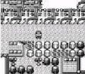

Transform Rage glitch
0x1500 control code arbitrary code execution (Crystal) | Cart-swap arbitrary code execution | Generation I custom map script pointer | Generation I invalid meta-map scripts | Generation I item ("8F", "ws m", "-g m", "5かい", "てへ" etc.) | Generation I move ("-", "TM42") | Generation I Trainer escape glitch text boxes | Generation II bad clone | Generation II Burned Tower Silver | Japanese Crystal Pokémon Communication Center SRAM glitches | Coin Case glitch | Generation II glitch Pokédex sortings | Pikachu off-screen glitch ACE | OAM DMA hijacking | Pikachu glitch emote | Generation III glitch Pokémon summary | Generation III glitch move animation) | Remote code execution | TM/HMs outside of the TM/HM pocket | ZZAZZ glitch Trainer FC
[hr]
 No further extensions
No further extensions 
Cloning | Item duplication glitch (Generation I) | Pokémon merge glitch ("Q Glitch", Generation I) | Time Capsule exploit | Bug-Catching Contest data copy glitch (Generation II, Japan only) | Berry glitch | Battle Tower [email protected] glitch (Generation III) | (Mimic) Transform Rage glitch (Generation IV)
Transform held item glitch (Generation IV, Japan only) | Mimic glitch (Generation IV, Japan only)
[hr]
 Buffer overflow techniques
Buffer overflow techniques 
99 item stack glitch | LOL glitch | Rival LOL glitch | Instant LOL glitch | RAM LOL glitch | Out of bounds LOL glitch | blockoobLG | Instant encounter infinite chain glitch | LGFly | Super Glitch (Generation I) | Party remaining HP glitch | Super Glitch (Generation III) | Text pointer manipulation mart buffer overflow glitch | CoolTrainer♀-type move | Double distort CoolTrainer♀ corruption | Yami Shop glitch | Party Pokémon box data shift glitch | Unterminated name glitch item instant encounter (Japanese Red/Green)
[hr]
 Item stack duplication glitch (Generation I)
Item stack duplication glitch (Generation I) 
Generation I expanded items pack (Glitch Rocket HQ maps, Map FE (English and non-English European Yellow) | Map script pointer manipulation (arbitrary code execution | Map script pointer item ball manipulation) | Text pointer manipulation (arbitrary code execution | Item ball manipulation | Mart buffer overflow) | Trainerless instant encounter glitch
[hr]
 Bad clone glitch (Generation II)
Bad clone glitch (Generation II) 
????? party overloading (Type 0xD0 move glitch | ????? map corruption | Celebi trick | Celebi Egg trick | Shiny Celebi trick | Glitch move map corruption | Overloaded party map corruption | Glitch Unown (Glitch Unown map corruption) | Duplicate key items glitch (Infinite items and item creation, Expanded Balls pocket (Wrong pocket TM/HMs, Glitch Pokédex categories))
[hr]
 Closed menu Select glitches (Japanese Red/Green)
Closed menu Select glitches (Japanese Red/Green) 
Dokokashira door glitch (International) | Fossil conversion glitch (international) | Second type glitch | Skip to Level 100 glitch | Trainer mutation glitch | Walk through walls (International) | Lift glitch | Badge describer glitch
[hr]
 Pomeg glitch (Generation III)
Pomeg glitch (Generation III) 
Pomeg data corruption glitch ("Glitzer Popping") | Charm glitch
[hr]
 Voiding (Generation IV)
Voiding (Generation IV) 
Broken escalator glitch (Japan only) | Elite Four door glitch (Japan only)
[hr]
 2x2 block encounter glitches (Generation I)
2x2 block encounter glitches (Generation I) 
Left-facing shore tile glitch (in-game trade shore encounter trick, Old man trick, Trade link up shore encounter trick, Fight Safari Zone Pokémon trick) | Viridian Forest no encounter grass tiles glitch
[hr]
 Glitch City
Glitch City 
Safari Zone exit glitch | RAM manipulation | Out of bounds Glitch City (Generation II) | Slowpoke Well out of bounds corruption (French Gold/Silver/Crystal)
[hr] Large storage box byte shift glitch
Storage box remaining HP glitch | Generation I max stat trick
[hr]
 Pikachu off-screen glitch
Pikachu off-screen glitch 
[hr]
 SRAM glitches
SRAM glitches 
Generation I save corruption | 255 Pokémon glitch | Expanded party encounter table manipulation (Generation I) | Send party Pokémon to a new game (Generation I) | Generation II save corruption | Mailbox glitches | Mystery Gift item corruption | Trainer House glitches
Death-warp | Ditto trick | Experience underflow glitch | Mew trick | Text box ID matching | Meta-map script activation
[hr]
 Walk through walls
Walk through walls 
Ledge method | Museum guy method | Rival's effect | Select glitch method (International Select glitch method), Brock Through Walls
[hr]
 Surf down glitch
Surf down glitch 
Grass/rock Surfing glitch (Spanish/Italian only) (adaptions: Submerge glitch (international)) | 8 8 (0x7C) grass/rock surfing glitch (English Red/Blue))
| PRAMA Initiative a également une page sur Transform Rage glitch. |
| Bulbapedia also has an article about Transform Rage glitch. |
An image or multiple images in this article are of poor quality and need replacing.
| |
|  | If possible, please reupload the image(s) at emulator quality, without changing the emulator's resolution. An image from a capture card would also be an improvement to an image taken from a camera. |
The (Mimic) Transform Rage glitch is a major glitch in Pokémon Diamond, Pearl and Platinum and Pokémon HeartGold and SoulSilver.
It allows a Pokémon to copy the entire moveset of a Pokémon knowing Rage.
Contents
Summary
This glitch involves a Pokémon using Transform on a Pokémon with Rage, using Rage, getting hit with an attack so that the "[PKMN]'s rage is building!" message appears, then using a move other than Rage on the same or the next turn (or a battle item including X Attack and Guard Spec. (other battle items may work, but they haven't been tested) on the turn that 'rage is building!' appears).
This alters the Pokémon's moves to the moves it knew after using Transform, as seen on the 'check moves' screen, and after the conclusion of the battle.
At least for the user's transformed Pokémon, performing the steps of the glitch and then switching to another Pokémon or having the Pokémon faint will not ruin the glitch if the player runs from, catches, or defeats the enemy Pokémon.
Diamond, Pearl and Platinum steps
Prepare a Pokémon with Rage (and another move or a Guard Spec/X Attack) and a Pokémon with Transform in the first and second position of the party. Both should be able to take damage from Ty & Sue's level 19 (Diamond/Pearl) or level 23 (Platinum) Pokémon.
Example: Salamence and Ditto.
- Battle Ty & Sue on Route 209, using the Vs. Seeker if necessary.
- Have the Pokémon with Transform transform into the Pokémon with Rage.
- Have the Pokémon under the transformation use Rage.
- Have the other Pokémon use an attack on the Pokémon that just used Rage, to get the 'rage is building' message.
- Have the Pokémon that got the 'rage is building' message use an attack other than Rage, or use a Guard Spec/X Attack.
Mimic Transform Rage glitch
This is an extension of the Rage glitch that lets you teach not just Ditto or Mew most moves (theoretically all moves except Chatter and Struggle[citation needed] can be taught via Smeargle) and Rage, but also any Pokémon that knows Mimic.
It allows things such as No Guard Machamp (No Guard is an Ability that makes Pokémon never miss, and Machamp's second random ability) with Sheer Cold and Gastro Acid.
- Put the Pokémon with Mimic and the Pokémon with Transform in the first two positions of the party. Either have the Pokémon knowing Transform be faster (by using X Speed(s) if necessary), or do this and go to step 3: on one turn have the Pokémon with Mimic use any move and the Pokémon with Mimic Transform into it, then on the next turn mimic Transform.
- Have the Pokémon with Transform transform into the Pokémon with Mimic, then on the same turn Mimic it to get Transform.
- Have the Pokémon that mimicked Transform use Transform into the other one of the user's Pokémon, then on the same turn switch that Pokémon into the Pokémon with Rage, which will have the moveset that you want.
- Have the transformed Pokémon use Rage, then have it get hit so that the 'rage is building' message appears.
- Have the transformed Pokémon use a move other than Rage, and the glitch should activate (you can go on to the 'check moves' screen to make sure).
HeartGold and SoulSilver steps (no double battle)
Via a wild Dunsparce
Wild Dunsparce from Dark Cave can be used for this glitch because they know Rage (and sometimes Defense Curl). Bring a Guard Spec or X Attack in case the Dunsparce is less than level 5. It's recommended to bring a Pokémon knowing Rock Smash, because wild Dunsparce are otherwise rare unless they are in a swarm.
Save in the cave before the glitch in case something goes wrong.
- Go to Violet City, then head east to Route 31 and enter Dark Cave.
- Put the Pokémon with Transform in the first position. Encounter a wild Dunsparce. If using Rock Smash, save before smashing the boulder in case you smash both of the nearest boulders and don't encounter a Dunsparce. If so, save, reset and try again.
- Transform into the Dunsparce.
- Use Rage against the Dunsparce.
- Get hit by the enemy Dunsparce with Rage, to get the '[PKMN]'s rage is building' message.
- Use Defense Curl or a battle item (Guard Spec and X Attack only tested), then the glitch should activate.
The Ditto should know Rage or Rage and Defense Curl according to the 'check moves' screen and at the conclusion of the battle.
Via an enemy Ditto
Bring a Pokémon to the area of grass in Route 47 (west of Cianwood City requiring Surf and Waterfall with a Pokémon knowing Rage and another move).
It's helpful for it to be at a decent level (compared to the Ditto here that are level 31-40[citation needed]) so that it has good HP and can take a lot of attacks.
Here are steps to get there:
- Go west into the cave to get to the Cliff Edge Gate.
- Go up the steps and into the exit (Rock Climb is not required).
- Go into the cave from the west, then down the right-most steps.
- Go through the exit to get to a shore, then use Surf.
- Go north until you get to the waterfall.
- Use Waterfall to climb the waterfall.
- There will be an area of grass with Ditto there that have a relatively high chance of appearing.
Steps from within battle:
- Have the Ditto transform into your Pokémon with Rage.
- Attack it with a move so that the 'rage is building' message appears.
- Have the Ditto use a move other than Rage.
- Capture the Ditto.
Ditto also appear in Route 34, 35 and Cerulean Cave but they are rarer there.